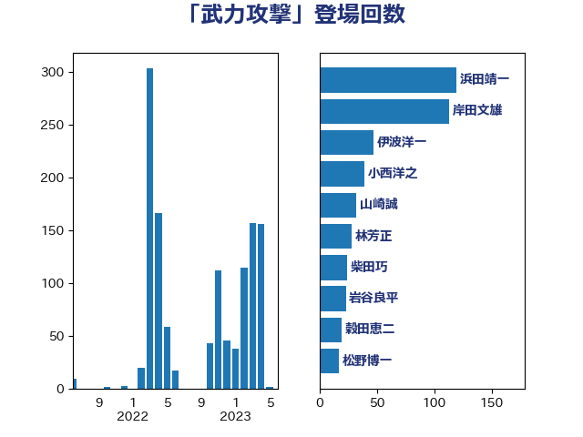

単語「武力攻撃」

| 浜田靖一 | 自由民主党 | 119 回 |
| 岸田文雄 | 自由民主党 | 113 回 |
| 伊波洋一 | 無所属 | 47 回 |
| 小西洋之 | 立憲民主党 | 39 回 |
| 山崎誠 | 立憲民主党 | 32 回 |
| 林芳正 | 自由民主党 | 28 回 |
| 柴田巧 | 日本維新の会 | 24 回 |
| 岩谷良平 | 日本維新の会 | 23 回 |
| 穀田恵二 | 日本共産党 | 19 回 |
| 松野博一 | 自由民主党 | 17 回 |
| 赤嶺政賢 | 日本共産党 | 16 回 |
| 井野俊郎 | 自由民主党 | 16 回 |
| 篠原豪 | 立憲民主党 | 15 回 |
| 浜地雅一 | 公明党 | 14 回 |
| 金子道仁 | 日本維新の会 | 13 回 |
| 奥野総一郎 | 立憲民主党 | 13 回 |
| 三木圭恵 | 日本維新の会 | 11 回 |
| 西村康稔 | 自由民主党 | 10 回 |
| 本庄知史 | 立憲民主党 | 10 回 |
| 玉木雄一郎 | 国民民主党 | 9 回 |
| 山添拓 | 日本共産党 | 9 回 |
| 北側一雄 | 公明党 | 9 回 |
| 中島克仁 | 立憲民主党 | 9 回 |
| 長妻昭 | 立憲民主党 | 8 回 |
| 萩生田光一 | 自由民主党 | 8 回 |
| 宮本徹 | 日本共産党 | 7 回 |
| 塩村あやか | 立憲民主党 | 7 回 |
| 美延映夫 | 日本維新の会 | 6 回 |
| 玄葉光一郎 | 立憲民主党 | 6 回 |
| 泉健太 | 立憲民主党 | 6 回 |
| 山口壯 | 自由民主党 | 6 回 |
| 小池晃 | 日本共産党 | 6 回 |
| 國場幸之助 | 自由民主党 | 6 回 |
| 田島麻衣子 | 立憲民主党 | 5 回 |
| 河西宏一 | 公明党 | 5 回 |
| 鬼木誠 | 立憲民主党 | 4 回 |
| 青木愛 | 立憲民主党 | 4 回 |
| 西村智奈美 | 立憲民主党 | 4 回 |
| 細田健一 | 自由民主党 | 4 回 |
| 米山隆一 | 立憲民主党 | 4 回 |
| 笠井亮 | 日本共産党 | 4 回 |
| 田村貴昭 | 日本共産党 | 4 回 |
| 渡辺周 | 立憲民主党 | 4 回 |
| 末松義規 | 立憲民主党 | 4 回 |
| 木村次郎 | 自由民主党 | 4 回 |
| 新垣邦男 | 立憲民主党 | 4 回 |
| 山本剛正 | 日本維新の会 | 4 回 |
| 太栄志 | 立憲民主党 | 4 回 |
| 古川元久 | 国民民主党 | 4 回 |
| 前川清成 | 日本維新の会 | 4 回 |
| 伊藤俊輔 | 立憲民主党 | 4 回 |
| 音喜多駿 | 日本維新の会 | 3 回 |
| 青柳仁士 | 日本維新の会 | 3 回 |
| 足立康史 | 日本維新の会 | 3 回 |
| 菅直人 | 立憲民主党 | 3 回 |
| 石井章 | 日本維新の会 | 3 回 |
| 松原仁 | 立憲民主党 | 3 回 |
| 東徹 | 日本維新の会 | 3 回 |
| 杉本和巳 | 日本維新の会 | 3 回 |
| 新藤義孝 | 自由民主党 | 3 回 |
| 岡田克也 | 立憲民主党 | 3 回 |
| 堀井巌 | 自由民主党 | 3 回 |
| 古賀友一郎 | 自由民主党 | 3 回 |
| 北神圭朗 | 無所属 | 3 回 |
| 佐藤正久 | 自由民主党 | 3 回 |
| 井上哲士 | 日本共産党 | 3 回 |
| 馬場伸幸 | 日本維新の会 | 2 回 |
| 阿達雅志 | 自由民主党 | 2 回 |
| 赤池誠章 | 自由民主党 | 2 回 |
| 羽田次郎 | 立憲民主党 | 2 回 |
| 福島みずほ | 社会民主党 | 2 回 |
| 神田潤一 | 自由民主党 | 2 回 |
| 枝野幸男 | 立憲民主党 | 2 回 |
| 木原誠二 | 自由民主党 | 2 回 |
| 斉藤鉄夫 | 公明党 | 2 回 |
| 志位和夫 | 日本共産党 | 2 回 |
| 山本左近 | 自由民主党 | 2 回 |
| 山本太郎 | れいわ新選組 | 2 回 |
| 小熊慎司 | 立憲民主党 | 2 回 |
| 大塚耕平 | 国民民主党 | 2 回 |
| 和田有一朗 | 日本維新の会 | 2 回 |
| 加藤明良 | 自由民主党 | 2 回 |
| 鈴木俊一 | 自由民主党 | 1 回 |
| 逢坂誠二 | 立憲民主党 | 1 回 |
| 細野豪志 | 自由民主党 | 1 回 |
| 福山哲郎 | 立憲民主党 | 1 回 |
| 磯崎仁彦 | 自由民主党 | 1 回 |
| 石橋通宏 | 立憲民主党 | 1 回 |
| 石井啓一 | 公明党 | 1 回 |
| 田野瀬太道 | 無所属 | 1 回 |
| 田村智子 | 日本共産党 | 1 回 |
| 片山さつき | 自由民主党 | 1 回 |
| 水野素子 | 立憲民主党 | 1 回 |
| 榛葉賀津也 | 国民民主党 | 1 回 |
| 森本真治 | 立憲民主党 | 1 回 |
| 松本剛明 | 自由民主党 | 1 回 |
| 松川るい | 自由民主党 | 1 回 |
| 打越さく良 | 立憲民主党 | 1 回 |
| 後藤祐一 | 立憲民主党 | 1 回 |
| 岡本あき子 | 立憲民主党 | 1 回 |
| 山田賢司 | 自由民主党 | 1 回 |
| 小野田紀美 | 自由民主党 | 1 回 |
| 嘉田由紀子 | 無所属 | 1 回 |
| 和田政宗 | 自由民主党 | 1 回 |
| 吉良よし子 | 日本共産党 | 1 回 |
| 勝部賢志 | 立憲民主党 | 1 回 |
| 伴野豊 | 立憲民主党 | 1 回 |
| 伊藤渉 | 公明党 | 1 回 |
| 仁比聡平 | 日本共産党 | 1 回 |
| 井坂信彦 | 立憲民主党 | 1 回 |
| 中野洋昌 | 公明党 | 1 回 |
| 中曽根康隆 | 自由民主党 | 1 回 |
| 中川正春 | 立憲民主党 | 1 回 |
| 下村博文 | 自由民主党 | 1 回 |